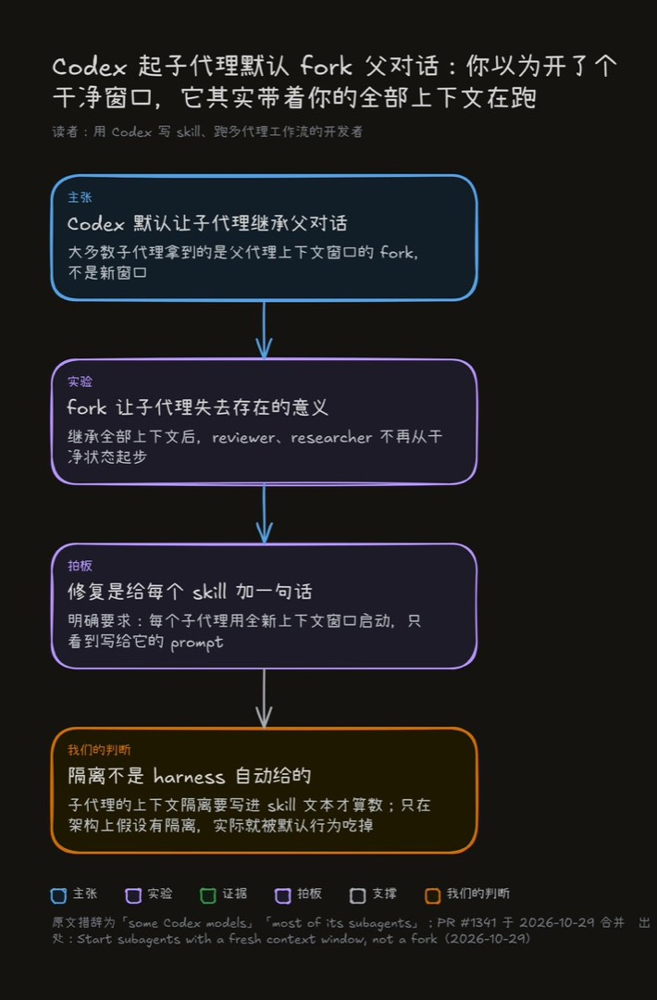
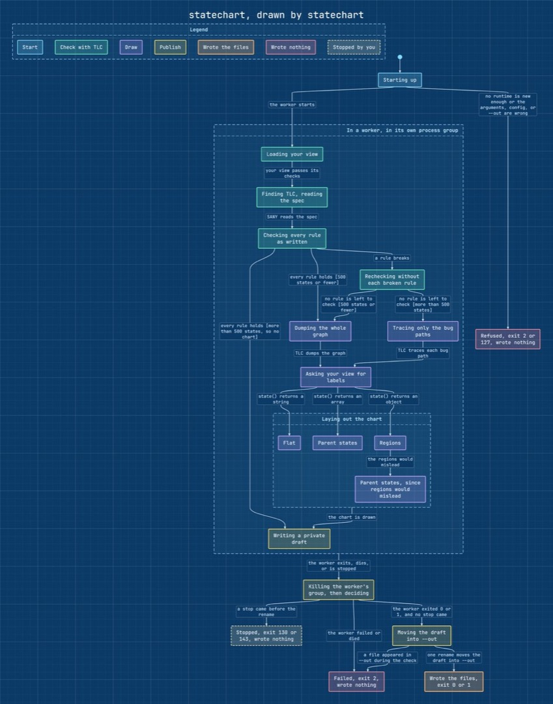
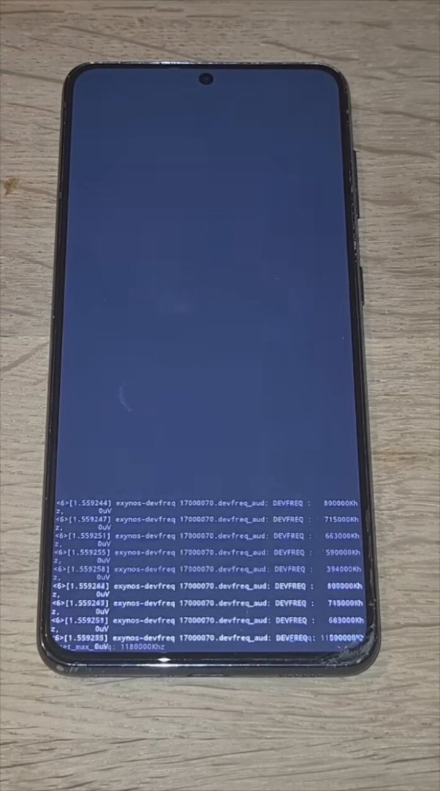

本期速览
01 币安被盗56亿资产提币关闭
02 Anthropic取消传统编程面试
03 Codex子代理改用全新上下文
04 Palantir本体层治理企业数据
06 Claude Code挖出14219自拍
01｜币安被盗56亿资产提币关闭
来源（X） · @Sea_Bitcoin · 2026-10-30 06:42
一个小时前资产已达 56 亿，现在可能过 60 亿了
涉及多条链、多个币，大头是 USDT, BTC, USDC, ETH，也有 UNI, ENA, Pepe, LINK 等主流币
一些稳定币已经被 Tether 和 Circle 冻结，希望没有继续扩大。提币已经关闭，这个规模币安赔得起，只是行情又要冷一段时间了，今年太难了。。。
02｜Anthropic取消传统编程面试
来源（X） · @Xudong07452910 · 2026-10-30 08:27
写这篇文章的是 Felix Rieseberg，之前负责过 Claude. ai、Cowork 和 Claude Code Desktop 的工程团队。
有意思的是，面对 AI Coding 的冲击，他反而很看好初级工程师的机会。
他举了个真实案例。
Anthropic 两位资历较浅的工程师，花一个周末就做出了 Claude Code 图形界面的原型，大约 8 天后便发布了首个公开版本。
他给年轻工程师的建议也很直接。
先搞清楚公司真正需要解决什么问题，找一个大胆但足够聚焦的想法，直接用 AI 做出能跑的原型，拿实际成果去推动事情。
别总等着别人分配任务，也别把十几个想法塞进同一个 Demo。
既然 AI 让写代码越来越容易，也让新人有机会更早证明自己的想法。
以后比拼的可能更多是发现问题的眼光、产品判断力，以及把想法真正做出来的主动性。
这篇《Hunger Beats Tenure》很推荐刚入行的工程师读读，尤其是还在纠结自己技术积累不够、资历太浅的朋友。
原文：https://felixrieseberg.com/hunger-beats-tenure-advice-for-junior-engineers/
03｜Codex子代理改用全新上下文
来源（X） · @yibie · 2026-10-30 07:59
Matt Pocock 发现 Codex 默认不是这么干的。部分模型在生成子代理时直接 fork 父对话，子代理继承整个上下文窗口。后果是 code-review 这类 skill 里两条本该并行、互不污染的审查轴，实际在同一份历史上跑；research 的后台代理也带着全部对话上下文，而不是只看到问题本身。
修复没有改 harness，是给 8 个会派子代理的 skill 各加一句话：每个子代理用全新上下文窗口启动，只看到写给它的 prompt。
我的判断：上下文隔离不是「用了子代理」就自动有的。隔离得写进 skill 文本，模型才会照着做；只在架构上假设有隔离，默认行为一来就被吃掉。写多代理工作流的人，值得检查自己的 skill 里有没有这句话。
原文链接在评论区
#Codex #Agent #AI编程

引用内容
Matt Pocock @mattpocockuk
中文译文
刚刚为 Codex 用户发布了一个重要的技能修复。
Codex 之前会让它的大多数子代理从父代理那里继承上下文窗口。也就是说，直接分叉继承。
这对我的很多技能产生了很大的负面影响，这些技能依赖于一个干净的上下文窗口（用于代码审查、实现规格等）
所以，修复如下：
https://github.com/mattpocock/skills
原文
Just shipped an important skill fix for Codex users.
Codex was biasing most of its subagents to inherit its context window from the parent agent. I.e. forking it.
This has a big negative impact on a lot of my skills, that rely on a clean context window (for code review, implement-spec etc)
So, a fix:
https://github.com/mattpocock/skills
04｜Palantir本体层治理企业数据
来源（X） · @HavenZhao · 2026-10-30 07:34
主要的问题还是出在了企业的数据上。数据接进来之前没人整理过。同一份文档有十个版本，哪个有效没人说得清，AI随机抓到哪个就答哪个，输出自然没法信。
Palantir的做法是先在数据上搭一层本体：哪个字段算数，哪个版本有效，谁能看什么，都先写清楚，AI再在这一层上干活。
值得注意的是，这件事很难在开工前一次做完。真实数据进了系统才知道有多乱，所以治理会一直持续到项目结束。不少AI项目做到后面，主要工作量其实就是治理数据。
据说Palantir自己也栽过：一个内部系统被两百多万条数据撑爆，复盘第一句话是，从没见过系统真正要处理的数据。
这种现象，在大多数企业都适用。如果想做好企业AI落地，就需要好好琢磨琢磨怎么高效得解决原本的杂乱数据的问题，否则AI项目基本上出不来什么实质上的效果。
你们的项目是数据先理好再开工，还是边做边治理？头疼不头疼？
05｜pstack状态图技能出Mermaid图
来源（X） · @poteto · 2026-10-30 02:55
中文译文
pstack v0.15.36 中的 /statechart 技能现在已稳定，可以使用了！它最好与 /create-formal-verification-skill 搭配使用，可以抽象地建模状态机和分布式系统来查找 bug。
这个技能包含一个迷你 TLC 编译器，可以解析代码、降级到一个小 IR，并有一个后端输出 mmd 语法。如果你愿意，你也可以让你的代理以你喜欢的任何风格创建图表，技能会告诉它使用 https://pele.run/ ，这个工具支持很多主题定制，所以你可以做蓝图风格、手绘百科插图风格，或者任何你喜欢的样式。
这是一张 /statechart 技能的图表，以及我刚刚发现的 2 个真实 bug。试试看，告诉我你的想法！
原文
the /statechart skill in pstack v0.15.36 is now stable and ready for use! it's best combined with /create-formal-verification-skill to abstractly model state machines and distributed systems to find bugs.
the skill contains a mini tlc compiler that parses, lowers to a small IR, and has a backend that outputs mmd syntax. if you want you can also ask your agent to create charts in whatever style you like, the skills tells it to use https://pele.run/ which is very themeable so you can make blueprints, hand drawn encyclopedia illustrations or whatever you like
here's a chart of the /statechart skill and 2 real bugs i just found. try it out and let me know what you think!

06｜Claude Code挖出14219自拍
来源（X） · @slmhktn · 2026-10-29 17:07
中文译文
一位内容创作者：
Claude Code 在我的 Android 手机上找到了整整 14,219 张我从未拍过的正面自拍照。
手机几乎在我拿起它的每一个时刻都在偷偷拍照。甚至在我躺在床上的时候。甚至在家里的时候。
不是什么屏幕截图之类的。就是从前置摄像头拍的真实画面。
在火车上。在车里。在家里。甚至只是我拿起手机看个时间的时候。
它们就那样静静地位于系统缓存中。
每一张都带有日期、时间和 GPS 位置。它们不在相册里。也不在"最近删除"里。
我把手机连接到电脑，做了完整备份，然后让 Claude Code 找出所有不在我的相册中的前置摄像头文件。
它去了 /data/system/users/0/faceunlock/cache 目录，还提取了 Google Play 服务中的另一个文件夹。
超过 14,000 个文件。既有普通照片，也有面部识别系统（Face Unlock）的红外帧。无一例外，每一个都有时间和位置记录。
我开始翻看这些照片。大部分属于过去 15 个月。然后我看到了一个"2 秒前"创建的文件。
我当时正在屏幕上查看那个文件夹。即使我在浏览那个文件夹的时候，手机还在继续拍我的照。
Google 和手机制造商声称，面部识别系统会将你的脸部转换为数学模型，然后立即删除图像。
但在这部手机上，原始图像就那样原封不动地待在文件夹里。一些向该目录写入数据的进程竟然是系统诊断服务。
几个仍有相机权限的旧应用也能访问这个文件夹。
我关闭了诊断数据，撤销了所有不必要的应用的相机权限，并清除了缓存。但这些画面中有多少已经泄露到其他地方，我完全不知道。
如果你想检查你自己的设备：将手机连接到电脑，做一个完整备份（或者使用 ADB），让 Claude 找出你相册之外的前置摄像头文件。我的文件就在上面提到的目录中。
原文
Bir içerik üreticisi:
Claude Code, Android telefonumda benim çekmediğim tam 14.219 yüz fotoğrafımı buldu.
Telefon, elime aldığım hemen her an gizlice fotoğrafımı çekiyormuş. Yatakta yatarken bile. Evdeyken bile.
Ekran görüntüsü falan değil. Bayağı ön kameradan alınmış gerçek kareler.
Trende. Arabada. Evde. Sadece saate bakmak için telefonu elime aldığımda bile.
Sistem önbelleğinde öylece duruyorlardı.
Hepsinde tarih, saat ve GPS konumu var. Galeride yoklar. Son Silinenler'de yoklar.
Telefonu bilgisayara bağladım, tam yedek aldım ve Claude Code'dan galerimde olmayan tüm ön kamera dosyalarını bulmasını istedim.
Gitti, /data/system/users/0/faceunlock/cache dizinini ve Google Play Hizmetleri içindeki başka bir klasörü çıkardı.
14 binden fazla dosya. Hem normal fotoğraflar hem de Yüz Tanıma sisteminin (Face Unlock) kızılötesi kareleri. İstisnasız her birinde zaman ve konum kaydı var.
Fotoğraflara bakmaya başladım. Çoğu son 15 aya aitti. Sonra "2 saniye önce" oluşturulmuş bir dosya gördüm.
Ekranda klasöre bakıyordum. Ben klasörü incelerken bile telefon fotoğrafımı çekmeye devam ediyormuş.
Google ve telefon üreticileri, Yüz Tanıma sisteminin yüzünüzü matematiksel bir modele dönüştürüp görüntüyü anında sildiğini iddia ediyor.
Ama bu telefonda ham görüntüler klasörde aynen duruyordu. O dizine veri yazan işlemlerin bazıları sistem tanılama (diagnostics) servisleriydi.
Hâlâ kamera izni bulunan birkaç eski uygulama da bu klasöre erişebiliyordu.
Tanılama verilerini kapattım, gereksiz tüm uygulamaların kamera iznini kaldırdım ve önbelleği temizledim. Ama bu karelerin kaçı çoktan başka bir yerlere sızdı, hiçbir fikrim yok.
Kendi cihazınızı kontrol etmek isterseniz: Telefonu bilgisayara bağlayın, tam yedek alın (ya da ADB kullanın) ve Claude'dan Galeriniz dışındaki ön kamera dosyalarını bulmasını isteyin. Benim dosyalarım yukarıdaki dizindeydi.
